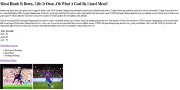
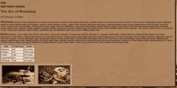
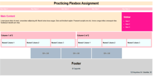
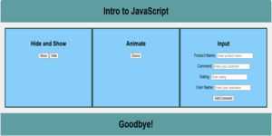
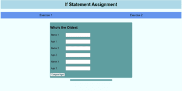
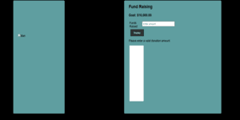
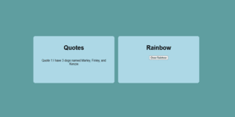
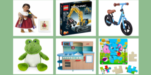
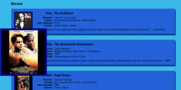

Ayden Wells Mathews
CSCE 242: Website Applications
Assignments
Assignment 1-Basic HTML

For Assignment 1-Basic HTML, we needed to create a Main Page, and an Assignment 1 page. We were to use correct directory structure and proper code formatting. In the Assignment 1 page we needed to include the elements: title tag, h1, p, images, table, list, and external links.
Assignment 2-Basic CSS

For assignment 2,-Basic CSS, we needed to create Assignment 2 and edit the Main pages color scheme. In addition to all the previous directory structue from Assignment 1, we need to include navigation, and more styling requirments such as changing colors once hovered over.
Assignment 3- Page layout

For assignment 3-Page Layout, we needed to use all the additional knowledge from the first two assignments and utilize HTML5 elements and FLexbox. In addition to going back to the main page to add Assignment 3 with the same styling as the first two assignment.
Assignment 4- Recreate CSS Page
Assignment 5-Intro to JavaScript

For assignment 5- Intro to JavaScript, we needed to use UTML and CSS to replicate a similar page to the diagram given. We had to use the knowledge we know to use our own color scheme, make a column layout and animation. As well as buttons you can click. One for the animation, two for the image to see it or not, and one for the comments.
Assignment 6-Conditionals

For assignment 6-Conditionals, we needed to set up a webpage with flexbox and style it. As well as implementing javacript into the assignment. We had to use both if statements and gradients.
Assignment 7-Loops

For assignment 7-Loops, we needed to use CSS Flexbox to construct a 2 column layout with a running man and a thermometer. We adjusted our last assignment to use input boxes and buttons to execute each part of the code.
Assignment 8-Arrays

For assignment 8-Arrays, we needed to do two parts: Part 1 - Quotes and Part 2 - Rainbow. Use an array to loop between 5 quotes at a set-interval. Then for the rainbow when the button is clicked, you will slowly create a rainbow.
Assignment 9- Classes

For assignment 9-Classes, we needed to have a list of toys, and when we hover over them the details will appear. We needed to use overlay, arrays, classes and loops to achieve the correct outcome.
Assignment 10- Parsing JSON

For assignment 10-Parsing JSON, we needed to implement portiaportias json file. Then we had to parse the json file, and display the corret content. As well as, properly style the content so that it aligns nicely.
Assignment 11- Server Side Hello World

For assignment 11-Server Side Hello World, we needed to download and install Node, then setup an account with Render. As well as, Create a github and a Hello World server app and then finally add it to render.
Assignment 12- Reading Server Side JSON

For assignment 12-Reading Server Side JSON, we needed to create a node server with express. Then create an array of items, when the user goes to a link like: .../api/data, they will see a json list.